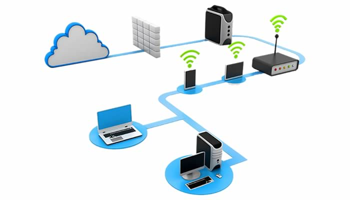

|
 |
|
Las redes computacionales (también llamadas redes de computadoras) son un conjunto de dos o más computadoras y otros dispositivos interconectados entre sí, que comparten recursos, información y servicios a través de un medio de transmisión (puede ser alámbrico como cables o inalámbrico como Wi-Fi). Su objetivo principal es permitir la comunicación y el intercambio de datos entre usuarios y sistemas.
Interconexión de dispositivos
Une computadoras, servidores, impresoras, teléfonos, sensores, etc.
Utiliza medios físicos (cables, fibra óptica) o inalámbricos (Wi-Fi, Bluetooth).
Compartición de recursos
Permite acceder a archivos, impresoras, bases de datos, aplicaciones y servicios de forma compartida.
Comunicación
Facilita el envío de mensajes, correos electrónicos, videollamadas, transferencia de archivos y acceso remoto.
Clasificación por alcance
LAN (Local Area Network): Red local, como en una casa, escuela o empresa.
MAN (Metropolitan Area Network): Red metropolitana que conecta varias LAN en una ciudad.
WAN (Wide Area Network): Red extensa como Internet.
Topología
La forma en que se conectan los dispositivos: bus, estrella, anillo, malla, híbrida.
Escalabilidad
Pueden crecer o reducirse según se agreguen más dispositivos o servicios.
Protocolos de comunicación
Conjunto de reglas que permiten el intercambio de datos (ejemplo: TCP/IP, HTTP, FTP).
Confiabilidad y seguridad
Incorporan mecanismos de seguridad (contraseñas, cifrado, firewalls) para proteger la información.
Velocidad de transmisión
Depende del medio usado y la tecnología (ej. fibra óptica es más rápida que el Wi-Fi básico).